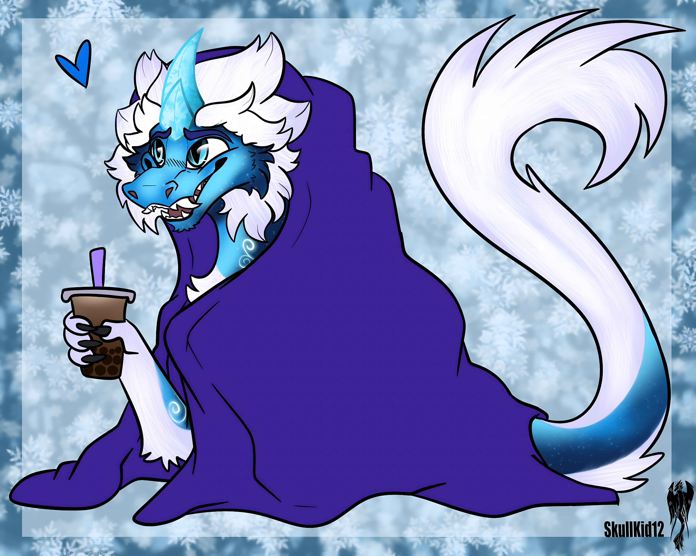
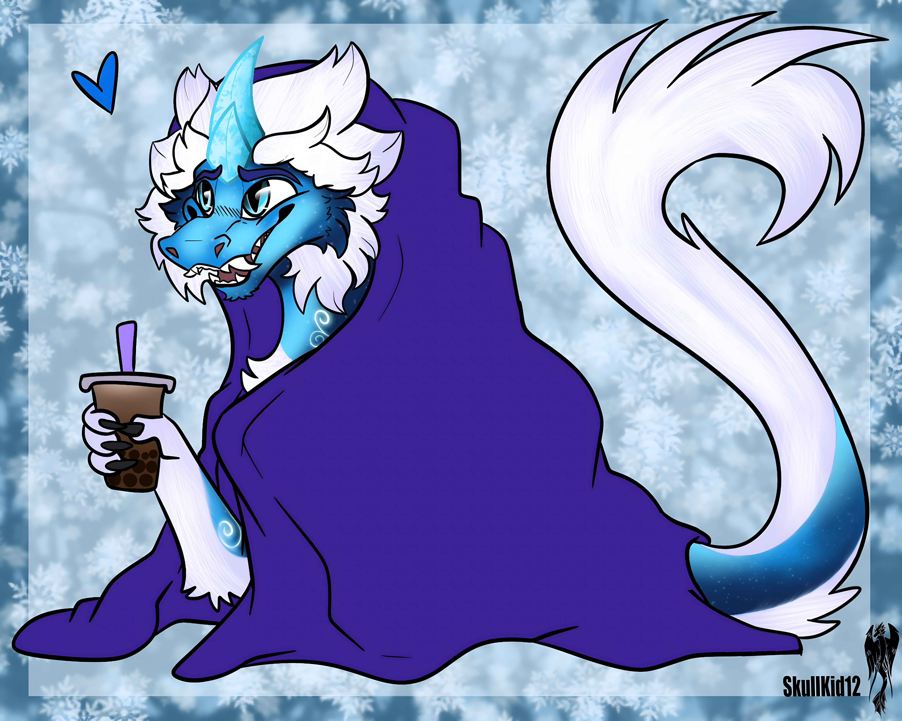

Vitals
Physical Stats
By nature Kazu is very playful and always likes to mess around, he lives life to the fullest and makes sure anyone and everything he cares about is loved and cherished. Although in his village he is the only dragon he has adapted to his human family and allies and see's himself more human then dragon, sometimes walking up right, cracking jokes at the bar, has custom designed clothes made for him (Kazu is popular on social media as he is the first dragon to ever have a social media presence)
Kazu was born in a small cave nestled within the vast, icy expanse of the Arctic. His parents, both magnificent ice dragons, cherished their newborn with a love as boundless as the frozen landscape they called home. Tragically, their time as parents was cut short. When Kazu was merely a babe, his parents were slain, leaving him orphaned in the unforgiving Arctic wilderness. Fate, however, had other plans for the young ice dragon. A nearby village of humans discovered the abandoned Kazu and, touched by his helplessness, took him in as one of their own. Despite the inherent differences between humans and dragons, the villagers welcomed Kazu with open arms, providing him with the warmth, care, and love he so desperately needed growing up amidst the hustle and bustle of the human village, Kazu was a curious and bright child, always eager to explore the nooks and crannies of his new home. Unlike his Arctic-dwelling ancestors, Kazu discovered a love for the indoors, finding comfort and endless fascination within the four walls of the village houses. He loved nothing more than to spend his days reading scrolls, playing games, and engaging in all sorts of imaginative play with his human friends. Kazu's personality blossomed in the village. He was known for his infectious laughter, his playful antics, and his knack for finding joy in the simplest of things. He was always up for a good time, whether it was joining in a snowball fight, building snow forts, or participating in the village's many festivals and celebrations. As Kazu matured, his innate magical abilities began to manifest. He discovered he could control and manipulate ice and snow, a testament to his ice dragon lineage. This revelation sparked a deep passion within him to understand and master his powers. He practiced his magic in secret, often incorporating it into his playful antics, much to the amusement of his friends. Despite his dragon heritage, Kazu felt most at home in the human village. He loved his adoptive family and the friends he had made, and he couldn't imagine living anywhere else. The village had become his world, a place where he could be himself, a silly, fun-loving ice dragon with a heart of gold. Now, Kazu spends his days exploring the village, practicing his magic, and bringing laughter and joy to those around him. He loves soaring through the skies with the other ice dragons, engaging in playful races and mock battles. But at the end of a long day, he always returns to the warmth and comfort of his human home, where a steaming mug of hot cocoa and a cozy blanket await him.
Likes & Dislikes
Likes:
- [Stargazing]
- [Tinkering]
Dislikes:
- [Loud noises]
- [Being rushed]
Abilities & Skills
- [Skill Name]: [Description of a talent.]
- [Skill Name]: [Description of a talent.]
Gallery

 
